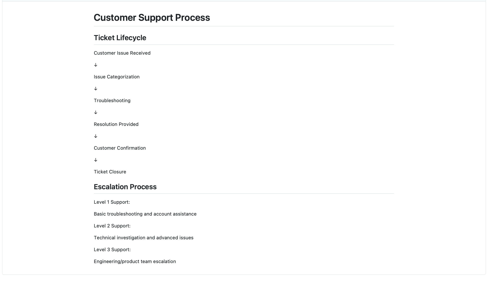
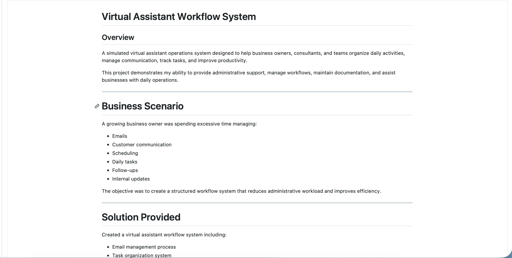

Customer Support
Inbound support, query resolution, escalations, customer follow-ups and clear communication.
CUSTOMER SUPPORT · CRM OPERATIONS · VIRTUAL ASSISTANCE
I help growing businesses manage customer communication, CRM workflows, inboxes, follow-ups and backend operations with clear communication and dependable execution.
I can support the work behind your customers—from the first message to CRM updates, follow-ups, documentation and reporting.
WHAT I CAN HANDLE
Inbound support, query resolution, escalations, customer follow-ups and clear communication.
Manage customer conversations professionally and keep queues moving without unnecessary delays.
Administrative tasks, schedules, reminders, inbox organisation and recurring day-to-day support.
Update customer records, work through CRM workflows, maintain accurate information and flag issues.
Data entry, verification, documentation, MIS updates and organised backend records.
Customer follow-ups and internal coordination so cases do not get stuck between teams.
Structured web research, information collection and clean delivery of findings.
First-line troubleshooting, issue clarification and escalation when specialist assistance is required.
INDUSTRIES
Customer onboarding support, inboxes, tickets, basic troubleshooting, CRM updates and customer follow-ups.
Order-related support, customer communication, returns/escalations and backend coordination.
Lead follow-ups, inbox management, data updates and client/customer coordination.
Administrative support, scheduling, inbox management, research and client communication.
PORTFOLIO PROJECTS
Explore CRM setups, documentation systems and operational workflows I have built.

Configured a CRM workflow including contacts, deal pipelines, support tickets and reporting dashboards.

Created troubleshooting guides, FAQs and escalation workflows to improve support consistency.

Designed systems for inbox management, scheduling, task tracking and weekly reporting.
ABOUT
I’m a customer support professional with experience in telecom, banking/credit cards, personal and business lending, sales and backend operations. My work has involved inbound and outbound communication, CRM-based customer handling, troubleshooting, documentation, MIS reporting and coordination with internal and field teams.
I’m comfortable learning new tools and processes quickly, working across time zones and handling customer conversations calmly—even when a situation has escalated.
WHY WORK WITH ME
I focus on understanding what the customer actually needs and communicating the next step clearly.
I can adapt to new SOPs, CRM workflows and product knowledge without needing everything to be familiar on day one.
Available for different shifts, weekends and remote work depending on the engagement.
I can help beyond the inbox: documentation, data, follow-ups, coordination and daily reporting.
LET'S WORK TOGETHER
Tell me what you need help with, the tools you use and the hours you need covered. I’ll get back to you with a practical way to start.
Replace the email above with your final professional work email before publishing.